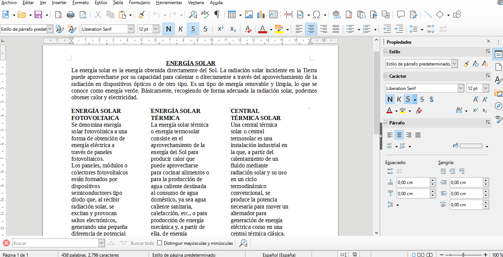
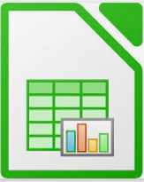
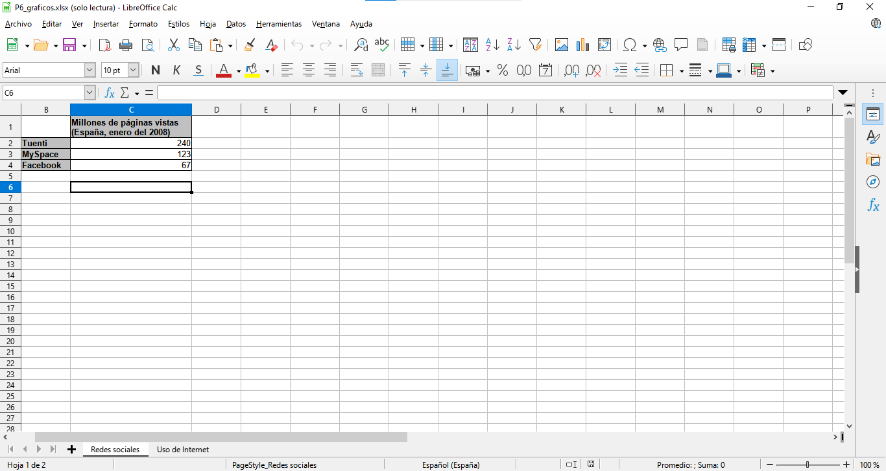
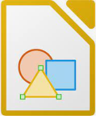
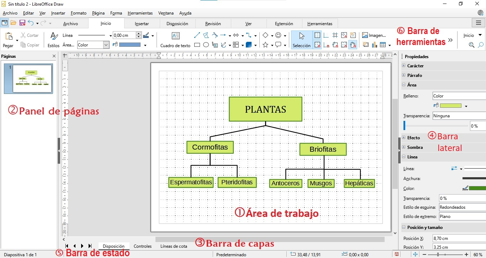
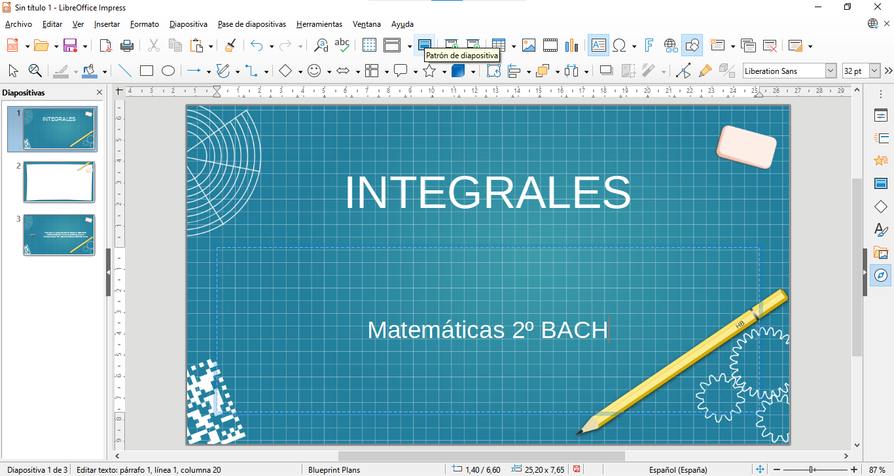
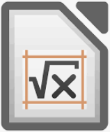
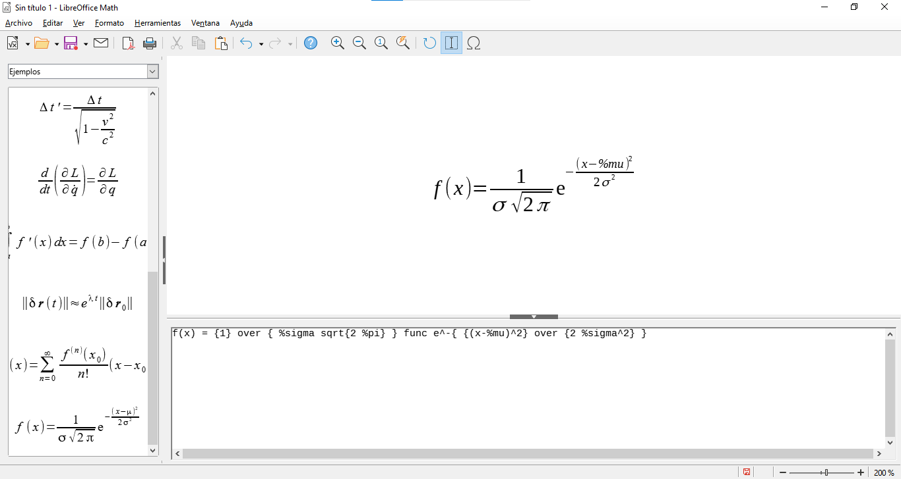
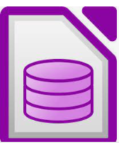
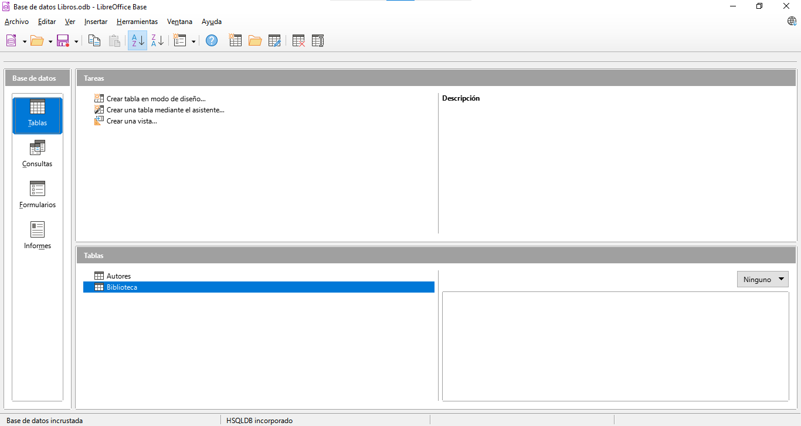

Una suite ofimática es un conjunto de programas que se utilizan en funciones de oficina y que permiten crear, almacenar, editar y transmitir digitalmente la información necesaria para realizar tareas y lograr ciertos objetivos. Las suites ofimáticas suelen incluir un procesador de textos, bases de datos, programa de edición de imágenes y hoja de cálculo.
Hoy en día, tener conocimientos de ofimática se está convirtiendo en algo imprescindible, ya sea para desempeñar un puesto de trabajo, o para llevar a cabo de manera más óptima ciertos trabajos del ámbito personal.
LibreOffice
Las suite ofimática más conocida y más usada es Microsoft Office, sin embargo, existen otras suites alternativas igualmente válidas. Una de ellas es LibreOffice, una poderosa suite gratis y de código abierto.
LibreOffice utiliza el formato OpenDocument (ODF), un formato de archivo completamente abierto y estandarizado por la ISO. Entre las extensiones típicas de los archivos ODF están las siguientes:
| Extensión | Archivo |
| .odt | Documento de texto |
| .ods | Libro de hojas de cálculo |
| .odp | Presentación de diapositivas |
| .odg | Ilustración o gráfico |
Writer
Es un procesador de textos muy completo. Podemos destacar la posibilidad de exportar a PDF y PUB, firmar digitalmente un documento e incrustar diversos elementos como, por ejemplo, hojas de cálculo, ecuaciones y otros objetos. Es compatible con muchos formatos de documentos, incluido Microsoft Word (.doc, .docx). El formato por defecto con el que se guardan los archivos es odt.

 Calc
Se trata de un gestor de hojas de cálculo, compatible con Excel de Microsoft, que tiene múltiples funcionalidades.

 Draw
Es una aplicación para crear gráficos vectoriales, con él podemos realizar carteles, diagramas, dibujos, que podemos reutilizar en cualquiera de las otras herramientas de LibreOffice. Además, los dibujos se pueden editar directamente desde Writer o Impress, utilizando un subconjunto de las funciones y herramientas integradas de Draw.

Por defecto, los archivos se guardan en formato odg, aunque a través del menú Archivo-Exportar es posible guardar en cualquiera de los formatos característicos de imágenes: jpg, gif, png, etc. También permite exportar a PDF.
Impress
Permite crear presentaciones multimedia. Ofrece una amplia gama de herramientas y elementos de diseño, lo que permite que la edición sea muy flexible y personalizable.

 Math
Aplicación para edición de fórmulas matemáticas.

 Base
Programa para gestionar bases de datos.

Podemos encontrar unos manuales muy completos en la página oficial de LibreOffice:
https://documentation.libreoffice.org/es/documentacion-en-espanol/